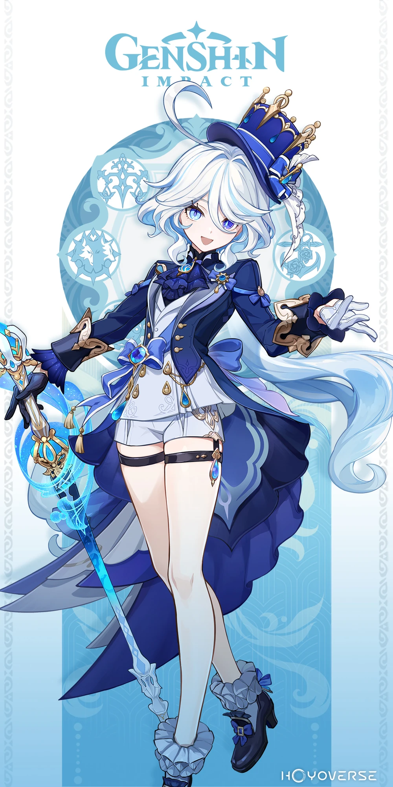

Furina was known as the Hydro Archon of Fontaine, ruling over a nation obsessed with justice.
She presented herself as dramatic, theatrical, and confident—treating trials like performances.
To the public, she appeared as a flawless god of judgment.
The real Hydro Archon was Focalors, not Furina.
Furina was a human vessel, created to act as the Archon in public.
Focalors separated her divinity and placed the burden of acting onto Furina.
Fontaine was destined to be destroyed—its people dissolved into water.
This prophecy drove Focalors to create a long-term plan.
Furina unknowingly became part of this plan.
Furina lived for centuries pretending to be a god.
She constantly performed, hiding fear and doubt behind arrogance.
Despite being human, she carried the expectations of an entire nation.
Neuvillette, the Hydro Dragon, acted as the true judge of Fontaine.
Furina’s role was symbolic—she performed justice, while real authority lay elsewhere.
Furina was put on trial herself.
Her identity as a “false Archon” was exposed.
This marked the collapse of her entire existence.
Focalors sacrificed herself to save Fontaine.
Her plan succeeded—the prophecy was broken.
But it came at the cost of her own existence.
With Focalors gone, Furina was freed from her role.
For the first time, she could live as herself—not as a god.
Furina represents the contrast between appearance and truth.
Her story shows that identity is not defined by roles imposed by others.
⭐ Rarity: 5★
⚔️ Weapon: Sword
💧 Element: Hydro
🧬 Constellation: Animula Choragi
🏷️ Real Name: Furina / (Focalors – True Hydro Archon)
🏛️ Category: Human Vessel / Former Archon
🎭 Role: Support / Sub DPS
Furina uses HP manipulation and summons to deal damage and buff allies.
Skill: Summons Hydro companions
Burst: Boosts team damage based on HP changes